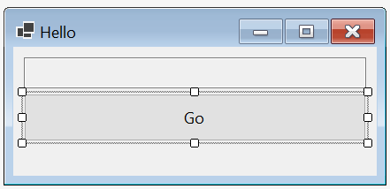

The Code Window
In the previous section, we designed the following GUI:
We also indicated briefly how functionality could be added to the button by double-clicking it in the design window to create an event handler. Creating this event handler also opens the code window to display it. The code window for this file can also be displayed by pressing F7 in the design window or by right-clicking the source code file name in the Solution Explorer and selecting “View Code”. Once a code window has been opened, it can be brought to the front by clicking the tab containing its file name near the top of the Visual Studio window. This window should look something like this:

Here is a ZIP archive containing the entire Visual Studio solution. After downloading and expanding it, you may need to navigate through a folder or two, but you should be able to find a file, Ksu.Cis300.HelloWorld.sln (the “.sln” suffix may not be visible, but it should show as type “Microsoft Visual Studio Solution”). If you double-click on this file, Visual Studio 2022 should open the solution (if you have an older version of Visual Studio on your machine, you may need to right-click the file and select “Open with ->Â Microsoft Visual Studio 2022”).
Note in the class statement the keyword, partial. This indicates that not all of this class definition is in this file. The remainder of the definition is in the file, UserInterface.Design.cs. Recall that this file contains code for laying out the GUI and making the uxGo_Click method an event handler for the “Go” button. One of the method definitions that it contains is the InitializeComponent method, which does the layout of the GUI and sets up the event handlers. Recall also that the Main method in Program.cs constructs an instance of this class, then displays it and begins processing events for it. Because the constructor (see the code window above) calls the InitializeComponent method, everything will be set up to run the application - all that is needed is code for the event handler. This code will then be executed every time the “Go” button is clicked.
Before we add code to the event handler, let’s first take care of a couple of other issues. Note that in the code window shown above, lines 3 and 10 contain code underlined in green. These underlines indicate compiler warnings. While code containing warnings will execute, one of the requirements of CIS 300 is that all code submitted for grading be free of warnings (see Programming Style Requirements).
We can see each warning by hovering the mouse over the underlined code. For example, hovering over “UserInterface” in line 3 displays the following:

This warning refers to the CIS 300 style requirement that each class, structure, enumeration, field, property, and method be preceded by an appropriate comment (see
Comments). To remove this warning, insert a new line prior to line 3, and type /// on this new line. This will cause an XML comment to be inserted:
/// <summary>
///
/// </summary>
public partial class UserInterface : Form
This is not quite enough to remove the warning. To accomplish this, text must be entered between <summary> and </summary>. Any non-blank text will remove the warning, but in order for the comment to be useful, the text should summarize the purpose of the class; for example,
/// <summary>
/// A GUI for a Hello World program.
/// </summary>
public partial class UserInterface : Form
Line 10 actually contains four warnings. Three of them can be removed by adding an appropriate comment, including descriptions of the two parameters (all event handlers in CIS 300 will have similar parameter lists, though the type of the second parameter will vary depending on the type of event that is being handled):
/// <summary>
/// Handles a Click event on the "Go" button.
/// </summary>
/// <param name="sender">The object signaling the event.</param>
/// <param name="e">Information about the event.</param>
private void uxGo_Click(object sender, EventArgs e)
These, comments, however, do not take care of the last warning, which states that uxGo_Click is not in Pascal case. This refers to the
naming convention for methods. To fix this warning, we need to rename this event handler by removing ux and _.
Care must be taken when renaming an identifier, as all occurrences of the identifier need to be changed. In this case, some occurrences of this name are in the automatically-generated code in UserInterface.Designer.cs. Because the Design window relies on this code, failing to change these occurrences will cause the Design window to fail to open due to syntax errors in this file.
The safe way to change any identifier name within Visual Studio is to use its Rename feature. First, right-click on the name to be changed, and select “Rename…” from the resulting popup menu. This will open a dialog within which the name can be changed. Once the name is changed, press Enter to cause the identifier to be renamed globally.
All warnings should now be gone. However, the CIS 300 style requirements specify two other comments that need to be added (see Comments). First, an XML comment needs to be added to the constructor. Second, a comment containing the file name and the author’s name needs to be inserted at the top of the file, after inserting these comments, your code should resemble the following (with “Rod Howell” replaced by your name):
/* UserInterface.cs
* Author: Rod Howell
*/
namespace Ksu.Cis300.HelloWorld
{
/// <summary>
/// A GUI for a Hello World program.
/// </summary>
public partial class UserInterface : Form
{
/// <summary>
/// Constructs the GUI.
/// </summary>
public UserInterface()
{
InitializeComponent();
}
/// <summary>
/// Handles a Click event on the "Go" button.
/// </summary>
/// <param name="sender">The object signaling the event.</param>
/// <param name="e">Information about the event.</param>
private void GoClick(object sender, EventArgs e)
{
}
}
}
Now we can finally turn our attention to providing functionality to the “Go” button; i.e., we will add code to the GoClick event handler. In order for this code to provide meaningful functionality, it will need to interact with the controls on the GUI. It needs to use their variable names to do this. The name of the TextBox in this code is uxDisplay (recall that you can find this variable name by
opening the design window, clicking on the control, and finding its “(Name)” property in its Properties window). Suppose we want to respond to the event by placing the text, “Hello world!”, in this TextBox. We therefore need to change its
Text
property to contain this string; i.e.:
private void GoClick(object sender, EventArgs e)
{
uxDisplay.Text = "Hello world!";
}
Notice that when you type a quote mark, a matching quote is automatically added following the text cursor. As long as you don’t reposition the text cursor, you can just type the closing quote as you normally would after typing the text string — Visual Studio won’t insert another quote mark, but will move the text cursor past the one it inserted automatically. The same behavior occurs when you type open parentheses, brackets, or braces.
The code window has several features that help with code writing. One of these features is auto-completion. Often while you are typing code, an auto-complete list appears, often with an entry highlighted. When an entry is highlighted (either automatically or by your selecting it manually), pressing “Enter” or typing a code element that can’t be part of the name (such as “.” or “+”) will insert the completion into your code. Once you get used to this feature, it can greatly speed up your code entry. Furthermore, it can be a helpful reminder of what you might need to type next. If you don’t want a name to auto-complete (perhaps because it is a name you haven’t defined yet), you can press “Esc”, and the auto-complete list will disappear.
If you are not using a lab machine, you might notice that as you type text, Visual Studio often provides auto-completions for the entire line. In some cases, the auto-completion is what you need, but in other cases, it is not. This feature can speed up the code-writing process for experienced programmers who use an auto-completion when they see that it matches what they were going to type. For inexperienced programmers, however, it can actually slow both the coding process and the learning process by making bad suggestions. If you find yourself using the auto-complete suggestions as hints, it would make sense to disable them, as these “hints” are often misleading. To disable this feature:
- From the “Tools” menu, select “Options…”.
- From the list on the left, select “IntelliCode”.
- In the large box in the upper-right, uncheck “Show whole line completions”.
- Save any changes, and restart Visual Studio.
This feature has been disabled on the lab machines.
Another feature of the code window is parameter information that shows as a popup box when you are typing a parameter list in a method call; for example:

This popup box gives the return type of the method, followed by the name of the method, followed by the parameter list, with the type of each parameter shown and the current parameter in bold face. When there are more than one method with the same name, this is indicated in the upper-left corner of the popup box (“1 of 21” in the figure above — the method shown is the first of 21 methods having that name). You can use either the arrows in the popup box or the up and down arrows on the keyboard to scroll through these different methods.
A related feature allows certain information to be obtained by hovering the mouse over different code elements. For example, hovering the mouse over an identifier will display the declaration and documentation for that identifier in a popup box. Also, hovering the mouse over a syntax error (indicated by a red underline, as shown under “Show” in the above figure) will display an explanation of the error, in addition to any information on the code element.